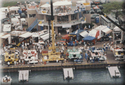
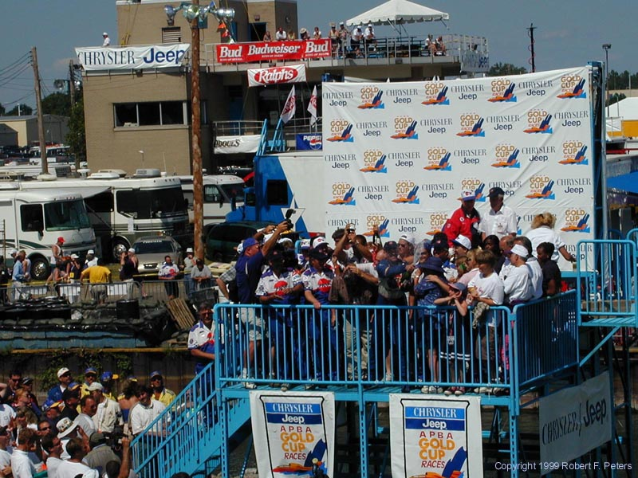
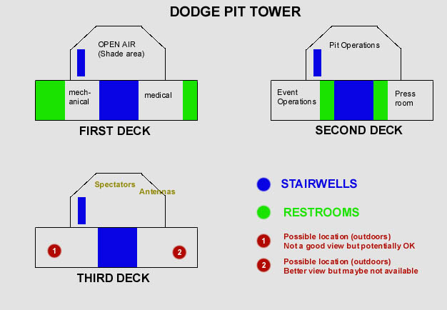

|
All contents Copyright © 2000 Spirit of Detroit THUNDERFEST, except where noted.
|
|
Hi Chris and Jim. This page is to show you pit tower.
|
|
Here's a long shot of pit tower. Notice it's a ground floor, 2nd deck
with glass enclosed area, and a third deck on top (open air). Notice
the areas in front of and to the sides of pit tower are already committed.
The UHRA trailer is the first to the right in this photo, with the blue-grey
roof.
 The ground floor is fully committed - the open air part provides shade for everyone, and there is also an equipment room, medical room and restrooms. The main part of the 2nd deck is pit operations, and is where the driver meetings occur. At the very left side of pit tower you'll see 2 windows - this is the press room. The matching room on the right side is event operations. The top deck has prime Pit Tower seating in the large white tent. To the left of that is a radio stations tent. Just to the side of that tent is a small area for antennas - perhaps we could get your video receivers here. Also note that the roof area above the press room may or may not be available. I know you'd rather be indoors, but this may be an alternate location for your guys (and they could probably all sit together). Look in the next photo for another view of this spot (behind the chrysler jeep banner).
Here's a side shot of pit tower.

Here's a drawing of the pit tower areas:
 |
|
All contents Copyright © 2000 Spirit of Detroit THUNDERFEST, except where noted.
|